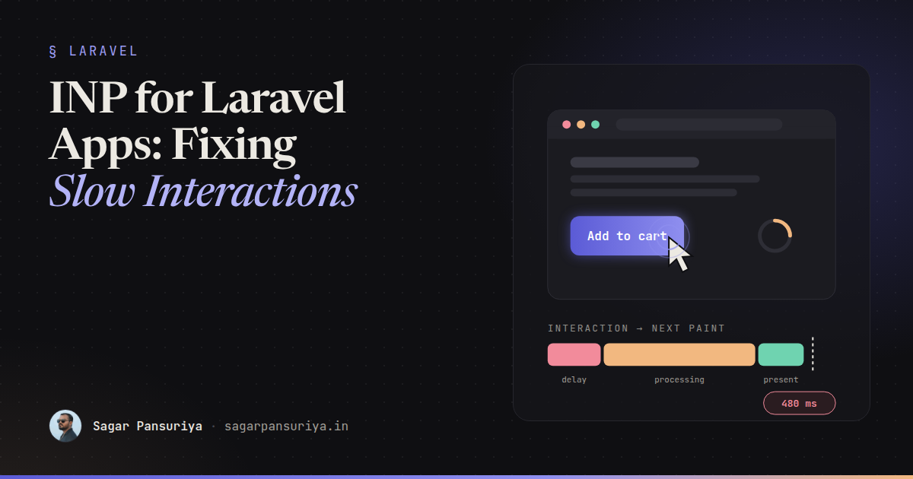
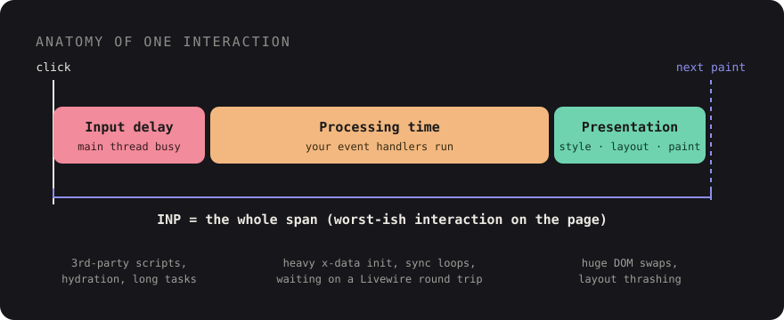

INP for Laravel Apps: Fixing Slow Interactions Before Users Notice


Picture a checkout page where nothing is broken. It loads fast, Lighthouse is green, and LCP is well under two seconds. But every time someone taps Add to cart on a mid-range Android phone, nothing happens for what feels like forever. It's actually about half a second. Then the badge updates.
That half second has a name: Interaction to Next Paint, or INP. It replaced First Input Delay as a Core Web Vital in 2024, and in my experience it's the metric Laravel apps fail most often, and most quietly. Lighthouse doesn't catch it, because Lighthouse doesn't click anything.
This post covers what INP actually measures, why Blade + Livewire + Alpine apps regress on it, how to find the slow interaction, and the fixes that actually move the number.
What INP actually measures
INP watches every click, tap and key press during a visit and reports roughly the worst one (for pages with lots of interactions it ignores a few outliers). For each interaction it measures the time from the user's input until the browser paints the next frame. That time has three parts:

- Input delay: the main thread was busy with something else when the user clicked, so your handler couldn't even start.
- Processing time: your event handlers running. Alpine expressions, Livewire's client code, your own JavaScript.
- Presentation delay: the browser recalculating styles, laying out and painting whatever you changed.
The thresholds: 200 ms or less is good, 200 to 500 ms needs improvement, and anything over 500 ms is poor. They're judged at the 75th percentile of real visits, so your fast laptop tells you very little.
Why Laravel apps are especially prone to it
None of this is Laravel's fault. The server renders HTML quickly and hands it over. The trouble starts with the patterns we pile on top.
1. Waiting on the server before painting anything
The biggest one. With Livewire, a wire:click sends a request, waits for the
response, then morphs the DOM. If the button gives no visual feedback until the
response arrives, the user's next paint is effectively blocked on your network round trip.
On a 4G connection in the evening that can be 300 to 800 ms.
Strictly speaking, the browser can paint while the request is in flight. INP only counts until the next frame. But if nothing on screen changes, users experience the full wait, and any heavy morph when the response lands shows up as a second slow frame.
2. Heavy x-init and big x-data objects
Alpine initialises every component on the page when it boots. A product listing with 60
cards, each with its own x-data that formats prices, reads
localStorage and sets up watchers, can easily produce a 150 ms long task. If
the user taps a filter during that task, you pay it all as input delay.
3. Third-party scripts in the layout
Chat widgets, tag managers, heatmaps, A/B testing tools. They all live in
layouts/app.blade.php, they all run on the main thread, and they all get
loaded on every page.
4. wire:model.live on every keystroke
Live binding on a search input fires a request and a DOM diff per character. Type fast on a slow phone and the interactions queue up behind each other.
Step one: measure real users, not your laptop
You can't fix INP from Lighthouse. You need field data. Three sources, from cheapest to most useful:
- PageSpeed Insights / CrUX: if your site has enough traffic, the "Discover what your real users are experiencing" section shows your 75th-percentile INP per URL and origin. It's free, but it's aggregated over 28 days and won't tell you which interaction is slow.
- Chrome DevTools Performance panel: open it, set CPU throttling to 4× or 6× slowdown, and just use the page. The live metrics view shows INP as you interact and highlights the slowest interaction. Throttling matters. Your M-series Mac is not your users' phone.
- The
web-vitalslibrary with attribution: this is what I ship on client projects. It tells you exactly which element was interacted with and which phase was slow.
Install it with npm and add a tiny reporter to your Vite entry:
// resources/js/vitals.js
import { onINP } from 'web-vitals/attribution';
onINP(({ value, rating, attribution }) => {
if (rating === 'good') return;
navigator.sendBeacon('/vitals', JSON.stringify({
metric: 'INP',
value: Math.round(value),
target: attribution.interactionTarget, // CSS selector of the element
type: attribution.interactionType, // 'pointer' | 'keyboard'
inputDelay: Math.round(attribution.inputDelay),
processing: Math.round(attribution.processingDuration),
presentation: Math.round(attribution.presentationDelay),
url: location.pathname,
}));
});And a route to log it. You don't need a dashboard on day one. A log channel and a weekly
grep will already tell you where the problem is.
// routes/web.php
Route::post('/vitals', function (Request $request) {
Log::channel('vitals')->info('inp', json_decode($request->getContent(), true) ?? []);
return response()->noContent();
})->withoutMiddleware(VerifyCsrfToken::class)->middleware('throttle:60,1');A week of this data usually tells a clear story: most poor INP events share one or two targets, and one phase dominates. Once you know the element and the phase, the fix is often ten minutes of work.
The fixes that actually move the number
Give feedback before the round trip
The single most effective change for Livewire apps. Paint something right away, and
let the server catch up. Livewire gives you this for free with wire:loading and
the data-loading attribute it adds to the element that triggered a request:
<button wire:click="addToCart({{ $product->id }})"
class="btn data-loading:opacity-60 data-loading:pointer-events-none">
<span wire:loading.remove wire:target="addToCart">Add to cart</span>
<span wire:loading wire:target="addToCart">Adding…</span>
</button>For things that don't need the server to decide, go further and be optimistic. Update the UI in Alpine first, then sync:
<div x-data="{ count: @js($cartCount) }">
<button @click="count++; $wire.addToCart({{ $product->id }})">Add to cart</button>
<span x-text="count"></span>
</div>Yield to the main thread in heavy handlers
If a click handler does real work (filtering a big client-side list, building a chart), split
it. Update the visible state first, yield so the browser can paint, then do the rest.
scheduler.yield() is supported in Chromium-based browsers. Fall back to a
setTimeout elsewhere:
const yieldToMain = () =>
globalThis.scheduler?.yield
? scheduler.yield()
: new Promise(resolve => setTimeout(resolve, 0));
Alpine.data('productFilter', () => ({
active: null,
async apply(filter) {
this.active = filter; // cheap: highlight the chip immediately
await yieldToMain(); // let the browser paint that
this.results = this.filterItems(filter); // expensive work after the paint
},
}));Stop sending a request per keystroke
Most search inputs don't need wire:model.live. Pick the cheapest modifier that
still feels right:
| Directive | Requests | Use it for |
|---|---|---|
wire:model | With the next action | Most form fields |
wire:model.blur | On leaving the field | Validation-as-you-go |
wire:model.live.debounce.400ms | After typing pauses | Search-as-you-type |
wire:model.live | Every input event | Almost never |
Make initialisation lazy
Components below the fold don't need to boot on page load. Alpine's official
intersect plugin lets you defer the expensive part until the element is
visible, and Livewire's lazy attribute does the same for whole components:
{{-- Livewire: render a placeholder, load the component when it scrolls into view --}}
<livewire:product-reviews :product="$product" lazy />
{{-- Alpine: only set up the carousel once it's on screen --}}
<div x-data="carousel" x-intersect.once="init()">…</div>Also look at 60 identical x-data components. Often a single parent component
with event delegation, or an Alpine.store, does the same job with a fraction of
the boot cost.
Put third-party scripts on a diet
- Audit the layout. Every script should have an owner and a reason to exist.
- Load non-critical widgets after the user interacts or after
load, not in the<head>. A chat widget can wait until the first scroll. - Scope scripts with
@push('scripts')to the pages that need them instead of loading them globally.
Keep DOM updates small
Presentation delay grows with how much of the page you change. A few things that help:
wire:key on list items so Livewire morphs only what changed, returning a
smaller partial instead of re-rendering a whole table, and
content-visibility: auto on long below-the-fold sections so the browser skips
their layout and paint work.
A checklist to keep
- Ship
web-vitals/attributionand log poor INP with the target selector. - Test with 4× to 6× CPU throttling in DevTools, never on raw laptop speed.
- Every
wire:clickgives visual feedback instantly (data-loadingor optimistic Alpine state). - No
wire:model.livewithout a debounce. - Lazy-load below-the-fold Livewire components and Alpine widgets.
- Split expensive handlers with
scheduler.yield(). - Every third-party script has an owner, loads late, and is scoped to the pages that need it.
For the checkout page from the start of this post, the fix is two small changes: an
optimistic cart count in Alpine and a data-loading state on the button. No
rewrite, no new framework. You just stop making the user wait for the server to tell them
something they already know.
Discussion